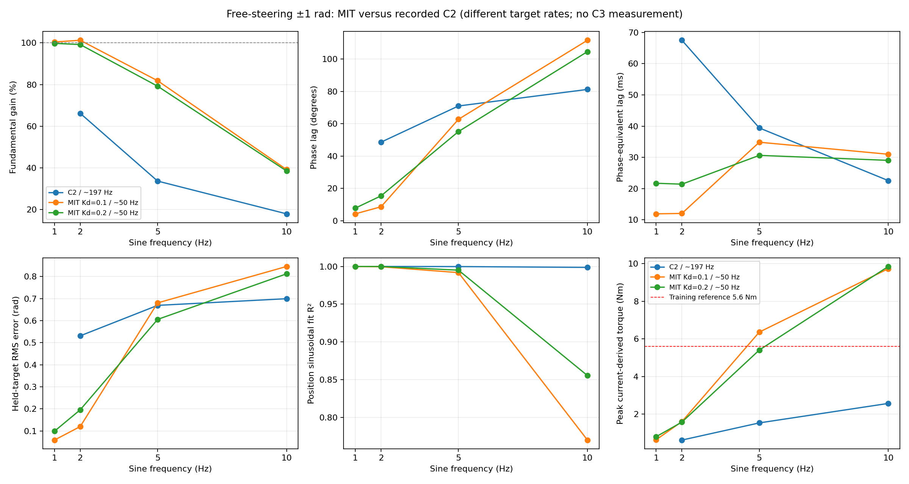
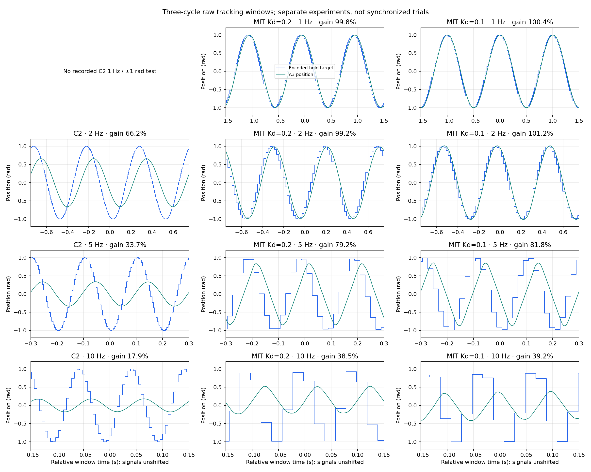

Eight new MIT recordings; three reverified C2 baselines. MIT Kp≈10, Kd≈0.1/.2. No measured C3 baseline.
MIT improves low-frequency tracking, but 10 Hz tracking remains poor with higher torque. All eight CF shutdowns lack disabled-mode confirmation.
| Mode | Hz | Kd | A3 amp rad | Gain % | Phase ° | Lag ms | RMS error rad | Peak torque Nm | Position R² |
|---|---|---|---|---|---|---|---|---|---|
| MIT | 1 | 0.1 | 1.0035 | 100.4 | 4.3 | 11.90 | 0.0588 | 0.634 | 1.0000 |
| MIT | 1 | 0.2 | 0.9969 | 99.8 | 7.8 | 21.70 | 0.0988 | 0.797 | 1.0000 |
| MIT | 2 | 0.1 | 1.0098 | 101.2 | 8.7 | 12.04 | 0.1200 | 1.602 | 0.9996 |
| MIT | 2 | 0.2 | 0.9892 | 99.2 | 15.4 | 21.41 | 0.1960 | 1.575 | 0.9999 |
| MIT | 5 | 0.1 | 0.8047 | 81.8 | 62.7 | 34.85 | 0.6806 | 6.359 | 0.9918 |
| MIT | 5 | 0.2 | 0.7790 | 79.2 | 55.1 | 30.63 | 0.6058 | 5.404 | 0.9951 |
| MIT | 10 | 0.1 | 0.3663 | 39.2 | 111.6 | 30.99 | 0.8457 | 9.728 | 0.7700 |
| MIT | 10 | 0.2 | 0.3600 | 38.5 | 104.5 | 29.04 | 0.8124 | 9.846 | 0.8555 |
| C2 | 2 | unknown PI | 0.6617 | 66.2 | 48.6 | 67.51 | 0.5314 | 0.619 | 1.0000 |
| C2 | 5 | unknown PI | 0.3363 | 33.7 | 71.0 | 39.42 | 0.6694 | 1.531 | 0.9998 |
| C2 | 10 | unknown PI | 0.1786 | 17.9 | 81.2 | 22.55 | 0.6996 | 2.566 | 0.9988 |


Free steering/front wheel confirmed by user; not ground-loaded balancing. Host send/receive times, not wire, acquisition or execution times. Phase-equivalent lag is frequency-specific, not identified pure delay. A1 torque is Q-current times read B0 Kt, not an independent shaft sensor. C2 ran approximately 197 Hz and MIT approximately 50 Hz; different days and unrecorded C2 firmware gains/limits prevent a strictly controlled mode-only comparison. No identified C3 experimental record: C3 performance cannot be quantified here.
Full conclusions, evidence and next tests · CSV table · Complete JSON/provenance · Comparison PDF · Tracking PDF